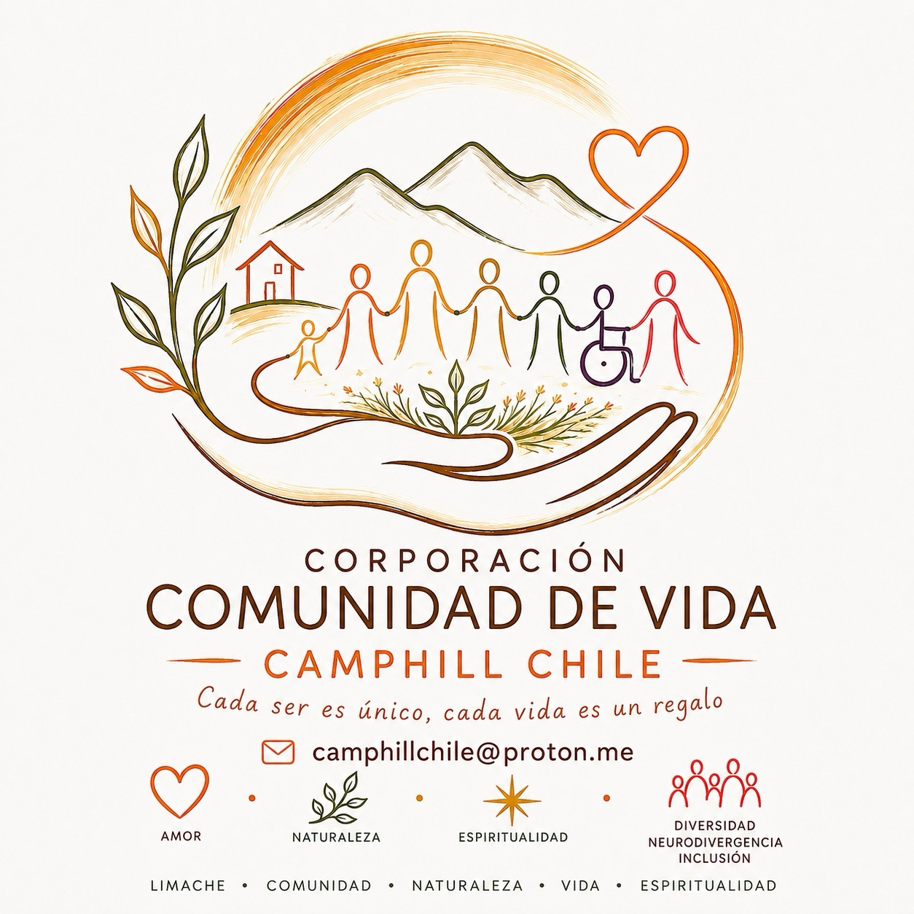

🏡
Vida compartida
Casas y espacios de encuentro donde la vida cotidiana sea el centro de la comunidad.

Una comunidad donde cada persona tiene un lugar.
Conoce el proyecto Sé parteCrear en Chile una comunidad de vida compartida donde personas con y sin discapacidad puedan vivir, trabajar, aprender y crecer juntas, reconociendo el valor único de cada ser humano.
Queremos que la inclusión sea una experiencia cotidiana: compartir la casa, la mesa, el trabajo, el arte, la celebración y el cuidado de la tierra.
Casas y espacios de encuentro donde la vida cotidiana sea el centro de la comunidad.
Cada persona participa desde sus capacidades, necesidades, intereses y posibilidades.
Música, pintura, movimiento, teatro y celebraciones que nutren la vida comunitaria.
Relaciones humanas basadas en respeto, dignidad, colaboración y pertenencia.
La tierra y el trabajo significativo forman parte de una vida comunitaria saludable. Imaginamos espacios para cultivar, crear, cocinar, reparar, cuidar y aprender.
Cultivar alimentos y aprender de los ritmos de la naturaleza.
Cuidar jardines, árboles y paisajes como parte de la vida cotidiana.
Artesanía, madera, cocina, mantenimiento y otros trabajos con sentido.
Preparar y compartir alimentos como una experiencia de encuentro.
El proyecto se inspira en una mirada antroposófica del ser humano y en prácticas de Pedagogía Curativa y Terapia Social que buscan acompañar procesos de desarrollo, autonomía, participación y vida comunitaria.
Estamos construyendo una visión que quiere transformarse progresivamente en una realidad de comunidad.
Camphill Chile se construye entre muchas personas. Puedes acercarte como familia, profesional, voluntario, colaborador, organización, amigo o donante.
Camphill Chile · Comunidad de Vida